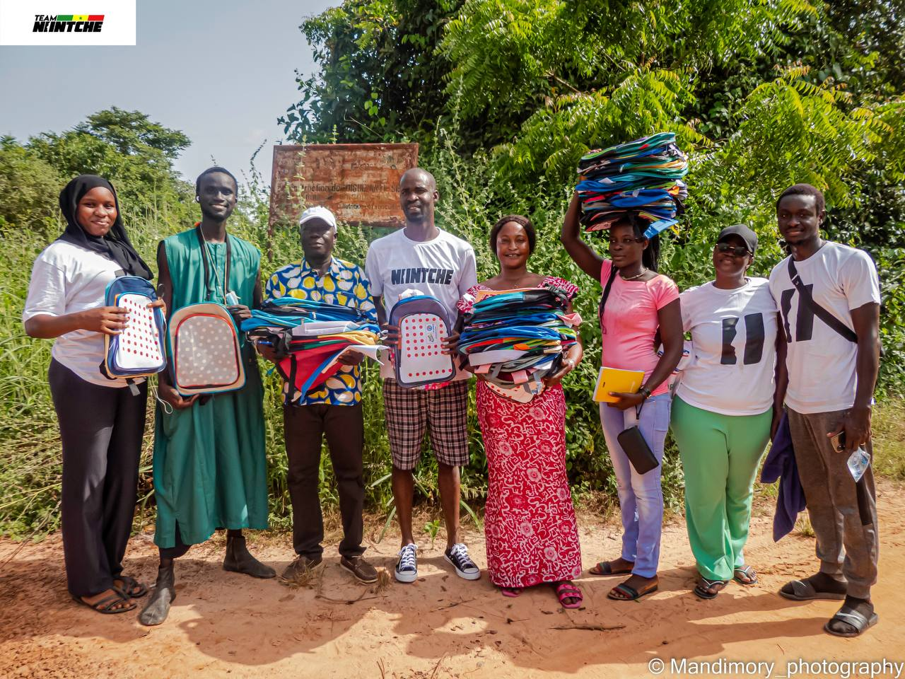
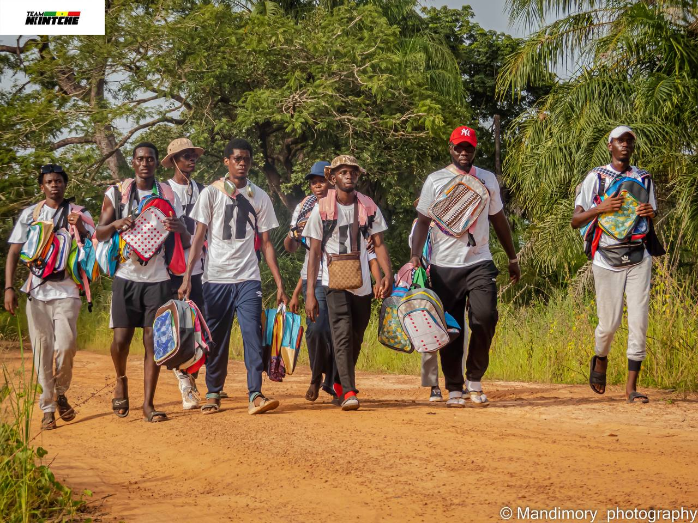
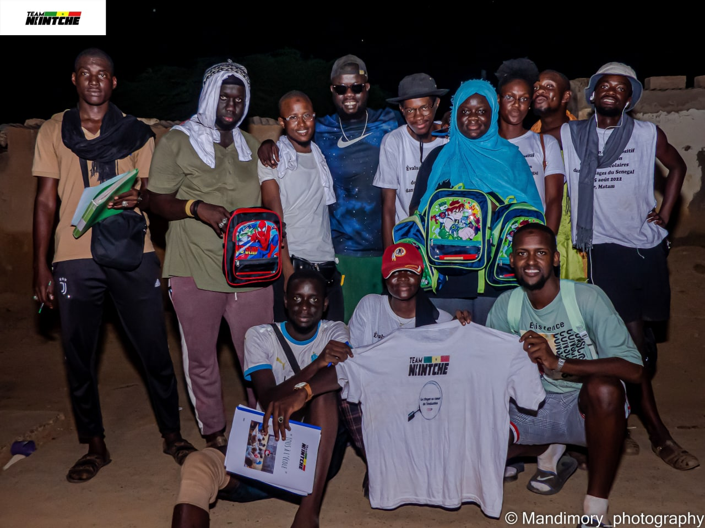
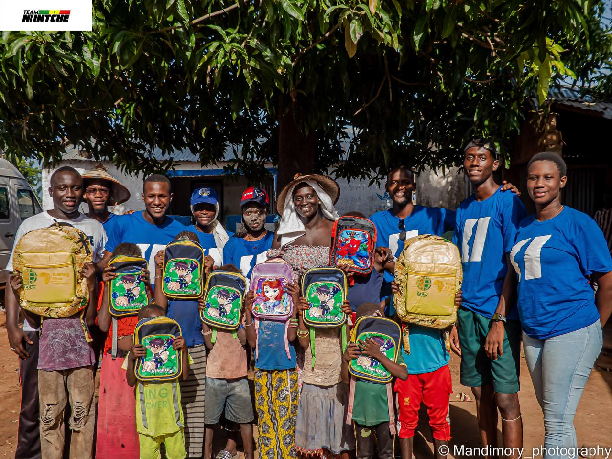
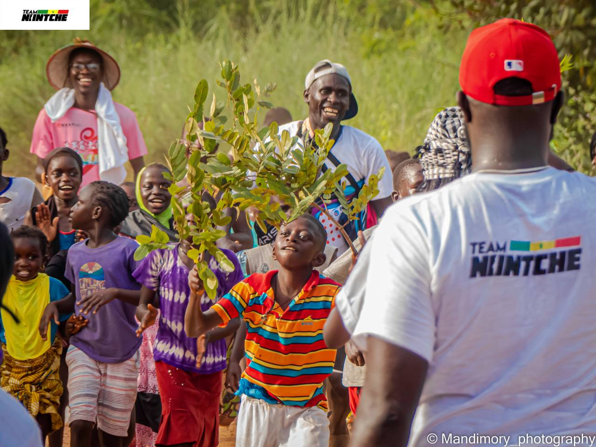
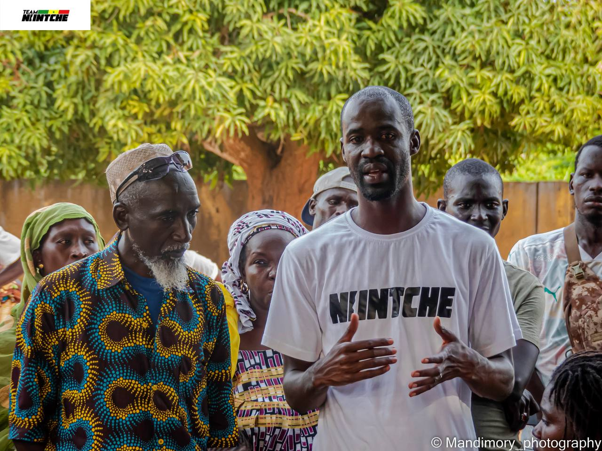

CAMPAGNE TOUS A L'ECOLE
Dans un contexte de mise en oeuvre des ODD en général, et en particulier de l'ODD 4, la pauvreté pourrait constituer un obstacle à son atteinte dans certaines zones défavorisées du Sénégal, car en effet, elle peut être facteur d’abandon, de déscolarisation.
Il devient alors nécessaire de pallier ce problème, de développer des stratégies de maintien des enfants à l’école, ou du moins, de réduire le taux d’abandon scolaire.
Ce projet s’inscrit alors dans ce cadre et est une campagne que nous menons, dans notre domaine de prédilection, l’éducation. Compte tenu des difficultés que rencontre ce secteur en Afrique, notamment au Sénégal, et de l’engagement citoyen dont nous nous efforçons de porter le flambeau, nous
avons décidé de lancer cette campagne dénommée “Tous à l’école”. “Tous à l’école” est une campagne au cours de laquelle
nous souhaitons distribuer des kits scolaires de base dans des zones défavorisées du Sénégal.

Reception d'un lot de KITS SCOLAIRES par les representants d'un des villages les plus touchés par la guerre en casamance. Ce lot permettra a ces enfants d'etre scolarisé au moins une année complete.

En route vers ETAFOUNE un village qui ressent encore les sequelles de la guerre. 8km de marche a travers la brousse pour offrir a ces enfants le meme reve que tout enfant normal peut avoir c'est a dire etre scolarise.

Photo de souvenir marquant ainsi la fin de la distribution en pleine nuit a PODOR où 850 enfants ont beneficié de nos KITS scolaires et seront assurés d'etre scolarisé toute l'année academique.

Reception de KITS SCOLAIRES des enfants d'une famille a SINTHIOU DAAGA, un village située a la frontiere de la GAMBIE.Un village qui se trouve a l'autre cote de la rive totalement enclavé.

Malgré la precarité dans ce village y a toujours un sourire sur le visage de ses momes, ils sont venus nous accueillir a plus de 3km de leur village avec joie et fierté tout en motivant les benevoles qui etaient epuisés.

Speech du president JUNIOR DIAKHATE, c'est lui qui a tout commencé il a eu l'intelligence et le courage pour donner sans rien attendre en retour. C'est lorsque qu'il etait en service dans des villages qu'il a appris à aider.